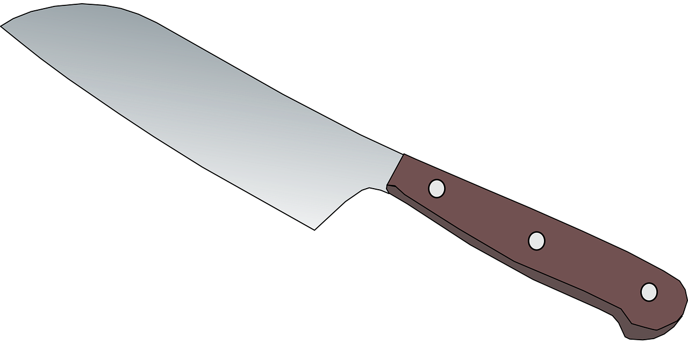

Welcome

Why I started Cooking
I first started to learn how to cook when I was 11 years old with my Grandpa. I spent every day from 1st through 8th grade at his house after school. Most of the time I never paid attention to his cooking until one day he said he wanted to teach me how to properly use a knife. As an 11 year old of couse I was attracted to knives. For the next two years my Grandpa taught me everything from how use a knife, how to chop certain foods specific ways, how to check temperatures to make sure meats were properly cooked, and proper kitchen etiquette. Cooking became a hobby for me, and I make an effort to cook myself one really good meal a week. The thing that stuck out to me the most that he said was "Clean as you go, no one likes a dirty kitchen and your guests do not want to see it either."
My Grandpa cooked Thanksgiving dinner every year for us, when he passed away five years ago I took that responsibility over. Mostly out of fear that someone would burn the Turkey. The recipes that I have on here are some of the ones he enjoyed the most.